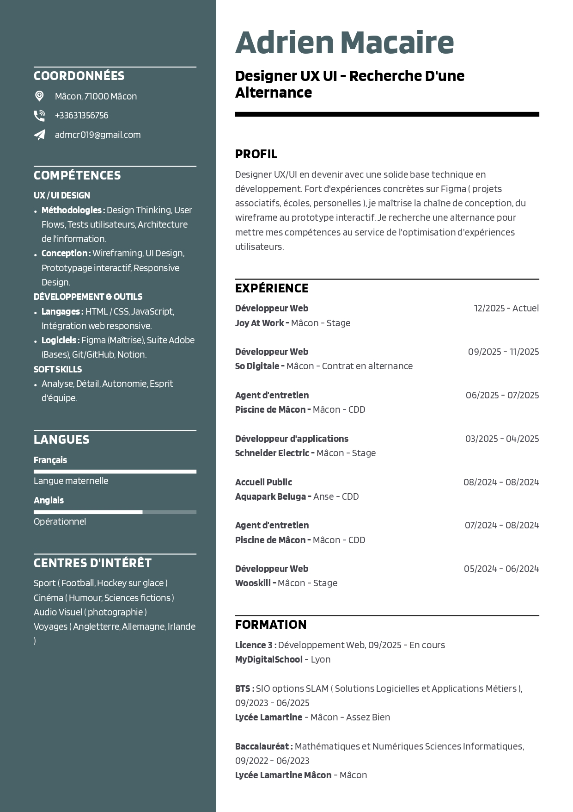

Transformer
des
idées
complexes
en
une
navigation
simple
Designer UX/UI avec une solide expertise technique. Je transforme des problématiques complexes en interfaces fluides et parfaitement réalisables.
Projets

Compétences
Stratégie & Recherche UX
Interviews, sondages, tests pour comprendre les besoins et comportements.
Parcours, flows, interactions intuitives pour des tâches complexes fluides.
Stratégie produit, repousser les limites avec des solutions créatives.
Design Visuel & Outils
Interfaces haute-fidélité captivantes et modernes.
Composants scalables, tokens, cohérence visuelle et marque.
Maquettes animées, tests de flux, itérations rapides.
Développement & Intégration
Structure sémantique, Grid, Flexbox
Interactions, logique, DOM
Composants, state management

Backend, API, MVC

Versioning, collaboration
CV

Travaillons ensemble
Intéressé par une alternance en UX/UI ou un projet stimulant ? Parlons-en et voyons comment mes compétences peuvent enrichir votre équipe.
Certifications
J’ai suivi la formation OpenClassrooms — « Incarnez l'éthique de l'UX Designer ».
À propos
Je m’appelle Adrien, j’ai 20 ans. Mon parcours est guidé par une double culture : celle du code et celle du design.
Après un BTS SIO et un Bachelor en Développement Web, j’ai choisi de me spécialiser en UX/UI. Pourquoi ? Parce qu’au-delà de la technique, ce qui me passionne, c’est de comprendre comment un utilisateur interagit avec une interface et comment rendre cette expérience la plus fluide possible.